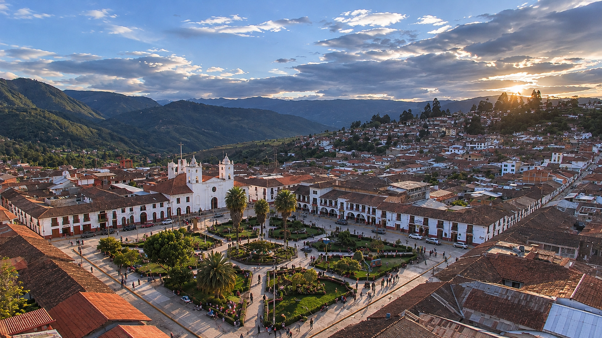
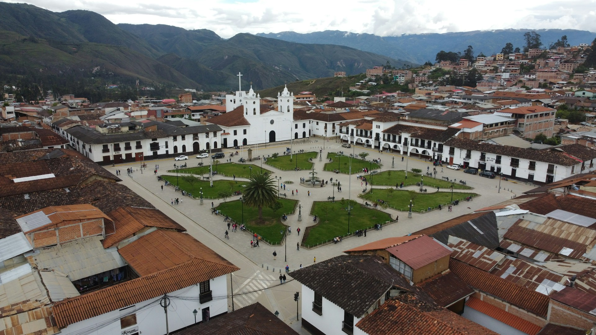
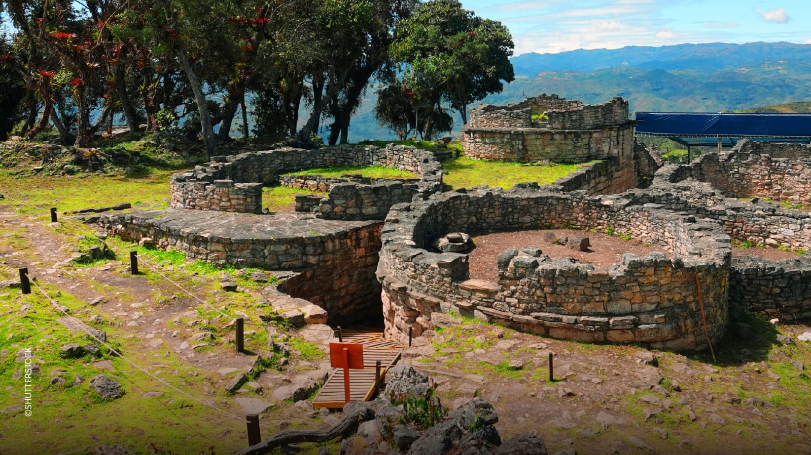
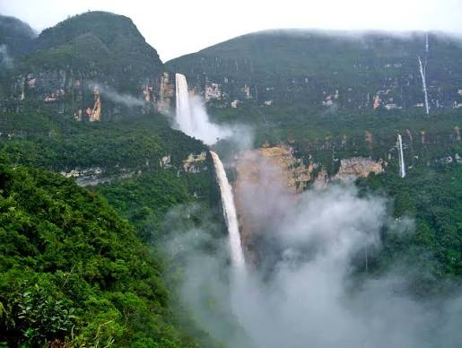
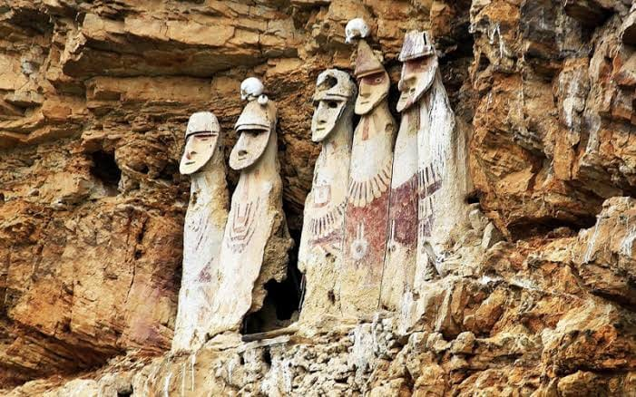
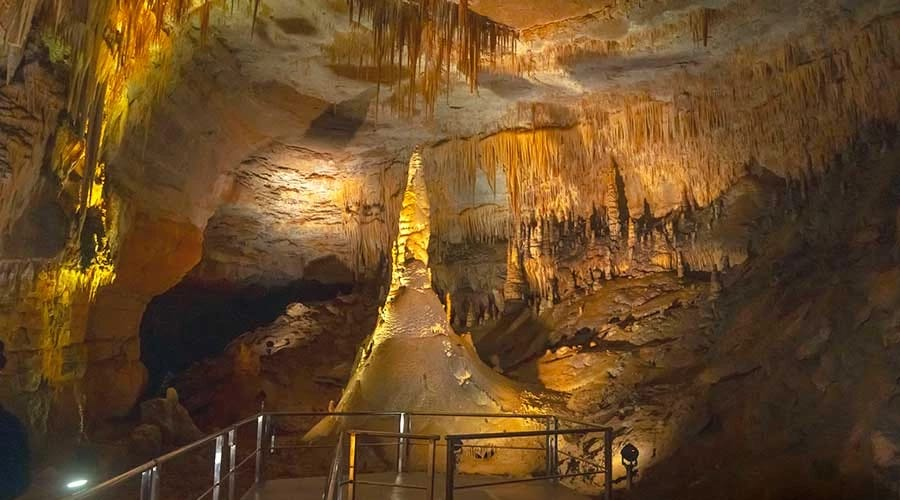
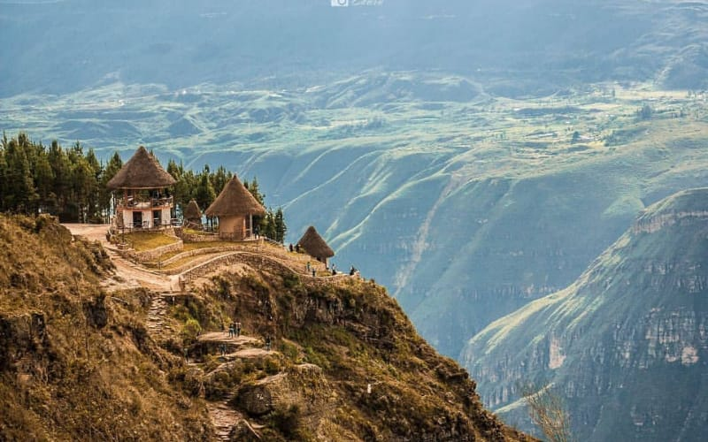
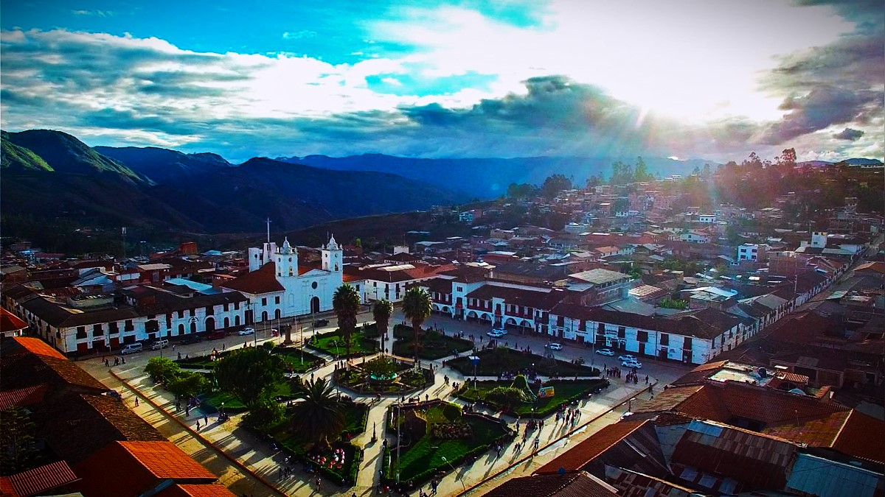
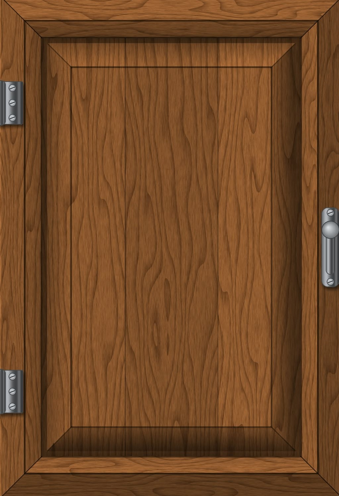
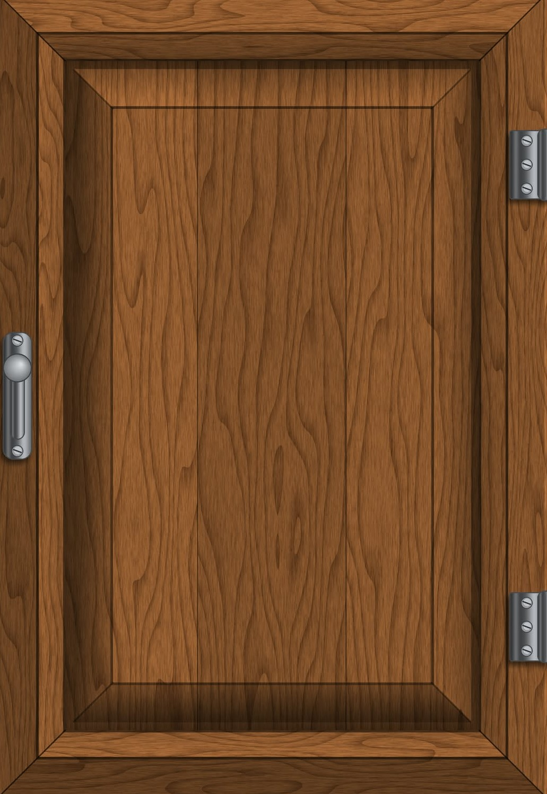

AMAZONAS · PERÚ
CHACHAPOYAS
Tierra de historia, cultura y naturaleza extraordinaria.
Explorar destinos ↓
Tierra de historia, cultura y naturaleza extraordinaria.
Explorar destinos ↓
Descubre la impresionante cultura Chachapoya.

Descubre la impresionante fortaleza de la cultura Chachapoya.

Un espectáculo natural rodeado de vegetación y montañas.

Conoce los misteriosos sarcófagos Chachapoya.

Explora impresionantes formaciones naturales.

Un mirador natural con vistas impresionantes.
Chachapoyas reúne memoria ancestral, pueblos con identidad propia y escenarios naturales que invitan a viajar sin prisa. Explora sus atractivos y descubre la diversidad de la provincia.
Explora el directorio distrital. Cada ficha puede ampliarse con historia local, fotografías, ubicación, tradiciones y atractivos verificados.

La provincia de Chachapoyas es una puerta de entrada a los paisajes, la memoria y las expresiones culturales de Amazonas. Su patrimonio arqueológico y sus entornos naturales merecen ser conocidos y cuidados.
Planifica cada visita con información actualizada, r espeta los espacios patrimoniales y apoya a las comunidades locales.
Volver a explorar destinos ↗
